website
ランディングページの製作
既存コードの改修
既存コードの改修
application
Windowsアプリケーションの開発
アプリケーションの.NETへの移行
アプリケーションの.NETへの移行
taking snapshot
宣材写真・素材画像の撮影および提供
design
ウェブサイトのカンプ制作
オブジェクト指向UIデザイン化案の提供
アイコン画像及びカリグラフィロゴ等の制作
オブジェクト指向UIデザイン化案の提供
アイコン画像及びカリグラフィロゴ等の制作
sound
各種サウンドエフェクト・BGMの制作
joooya
1993 Born in Utsunomiya City
Lived in Shizuoka - HongKong - Nagoya
Graduated from Nagoya University of Foreign Studies.
Studied abroad to Queensland, Australia.
My creativity is thanks to confronting diversity
while my life with migration.
Lived in Shizuoka - HongKong - Nagoya
Graduated from Nagoya University of Foreign Studies.
Studied abroad to Queensland, Australia.
My creativity is thanks to confronting diversity
while my life with migration.